How many of you have all of your
programs run perfectly the first time? Not many of you,
I'll bet. You might be surprised to find out that I find
that just as frustrating as you do.
How many of you have all of your
programs run perfectly the first time? Not many of you,
I'll bet. You might be surprised to find out that I find
that just as frustrating as you do.
It's also pretty frustrating when your program runs incorrectly and you aren't sure why. You could just change things at random and hope to get better results the next time, but that's really not very effective.
To actually find the source of the problem, you can insert
diagnostic print statements into your code, so you can
examine the state of your variables at different points. Once
you've located the general area where the problem appears,
then you can insert more print statements to drill down to the
line of code that's causing the problem like this:
 Of course, this can be a tedious and time-consuming process,
since you have to a) insert the print statements, b) analyze them,
c) adjust them, and then d) remove them once you've
found and corrected the bug.
Of course, this can be a tedious and time-consuming process,
since you have to a) insert the print statements, b) analyze them,
c) adjust them, and then d) remove them once you've
found and corrected the bug.
 Wouldn't be nice if you could just put your
program into a state of suspended animation, and then just
look at the contents of your variables, using some kind of
"virtual microscope"?
Wouldn't be nice if you could just put your
program into a state of suspended animation, and then just
look at the contents of your variables, using some kind of
"virtual microscope"?
The good new is, you can.
In this lesson, you'll learn how to use a program called a debugger. A debugger really is a "virtual microscope" that helps you find the cause of bugs (discovered by your unit tests, of course). Debuggers work by:
- tracing through the program,
- pausing it temporarily,
- and then examining any variables you're interested in,
- before resuming.
Debuggers vary widely from one system to another, but the Eclipse debugger, which we'll examine in this lesson, is really quite sophisticated. The basic debugging skills you'll learn and use, though, will work on any system; only the names of the commands will change as you move from IDE to IDE.
Using a Debugger
Modern IDEs, like Eclipse, contain debugging programs that allow you to interactively execute your programs. You can stop and restart your program and see the contents of variables whenever your program is temporarily suspended. At each stop, you have the choice of what variables to inspect and how many program steps to run until the next stop.
 Debuggers are not really a tool for lazy programmers, though. If you
don't know what your program is supposed to do, and you
don't know what values your variables are supposed to
contain, then a debugger won't help you at all.
Debuggers are not really a tool for lazy programmers, though. If you
don't know what your program is supposed to do, and you
don't know what values your variables are supposed to
contain, then a debugger won't help you at all.
While using a debugger is more convenient than inserting diagnostic print commands, is not cost-free. It takes time to set up and carry out an effective debugging session. That's what you'll learn to do in this lecture.
Three Useful Commands
As your Java programs get larger, you'll find that simple print statements are just no longer adequate. You really will need to learn how to use a debugger. Fortunately, three very basic commands will cover 80 or 90% of the debugging that you'll need to do:
- First, you'll need to be able to identify a particular location in your program where you want to stop, and then just run the program normally until that point is reached. When your program comes to the stopping point you've specified, it will go into the special debugging "suspended" state. These special stopping locations are called breakpoints, and your program can have any number of them.
- With your program suspended, you'll then want to examine the state of your variables by inspecting them. A good debugger will let you examine local variables and instance variables and both object and primitive types. You'll often be given the opportunity to specify which variables you want to examine (called a "watch") so you don't have to go hunting through dozens of variables to find the ones you're interested in.
- Finally, if you don't immediately find the problem by inspecting the variables, you'll need to know how to run your program in slow motion, a line at a time. Debuggers allow you to execute a single line and then pause again, so that you can inspect the changes made by that line. They will also let you specify whether a line containing a method call should be followed, thus stepping into the method, or whether you should just call the method, thus stepping over it.
While debuggers vary from platform to platform, every debugger will support these three operations, even if the names and techniques are slightly different. That means that learning to create breakpoints, watch variables, and step over your code using Eclipse will be valuable, even if you end up working with a different IDE.
Eclipse Debugging Session
To have a realistic example for running a debugger, let's walk
through a sample debugging session. To do this, we'll
study a class named Word whose primary purpose is to count
the number of syllables in a word. (This example is from Cay Horstmann's
Big Java, but I've modified the code a bit.)
To follow along, create a new project in Eclipse and then download and import the two Java source code files, Word.java and SyllableCounter.java, into your current project. Once you have the project created and the files imported, go ahead select the Word.java in the Eclipse editor window.
Here's the rule that the class is supposed to use to count syllables:
- Each group of adjacent vowels (a, e, i, o, u, y) counts as one syllable (for example, the "ea" in "peach" contributes one syllable, but the "e . . . o" in "yellow" counts as two syllables). However, an "e" at the end of a word doesn't count as a syllable. Each word has at least one syllable, even if the previous rules give a count of 0.
- Any non-letter characters that appear at the beginning and end of the string are ignored, since we don't want to count quotation or punctuation marks.
OK, let's get started. Run the testing program,
SyllableCounter, and then enter "hello yellow peach." as the
input.
As you'll see, when you run the program, it tells you that
there is one syllable in hello, one syllable in yellow and one
syllable in peach. I guess one in three isn't bad, but we can do
better.
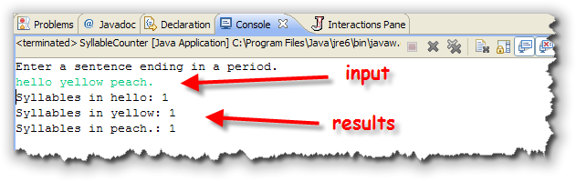
The debugger will allow us to run the program step-by- step and examine it. To do this, we'll need to put the program into suspended animation when it encounters the portion of the program that we want to examine. The only question is, "where to start?"Run To a Particular Line
Using a debugger won't answer that question for you, but it does give you a way to find the answer. Remember, your debugger is a tool you'll use to investigate your program: you'll still have to use your logic skills to ferret out the clues.
So, here's a clue. What part of the program is incorrect? That's easy; obviously the code that calculates the number of syllables doesn't seem to work.
So, look
through the Word class and there, you'll find a method named
countSyllables(). That seems like a really promising place to
start our investigation.
To start debugging your program at the countSyllables() method, we need to put a breakpoint on the line containing the method header. Simply
- find the line, and then
- right-click in the margin, just to the left of the line number.
- From the context menu, select Toggle Breakpoint.
Once you've done that, your screen should look like this:
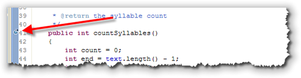
Starting the Debugger
Now that you have the breakpoint set, you need to start the debugger. That's pretty easy. Just make sure that:
- SyllableCounter is the selected file. (This won't work if
Word.java, where you put the breakpoint is still selected,
since it doesn't have a
main()method). I've marked this step #1 in the screenshot shown here:
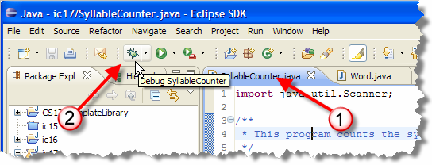
- Then, click the icon that looks like a little beetle; it's obviously supposed to be a "bug".
The first time you debug SyllableCounter you'll see the little
dialog that asks "how" you want to debug it. Choose "Java
Application" (since we're not running anything on a server),
and click OK, like this:
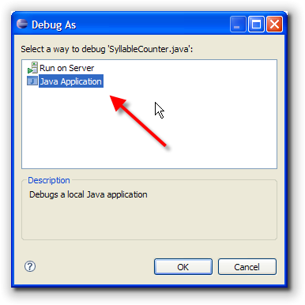
The program will start running, just like it did before. When asked to enter your sentence, enter hello yellow peach., just as before: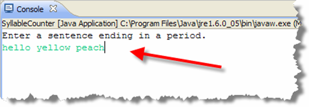
At this point, you're presented with another dialog, which is kind of jarring. Don't worry. All it's saying is that when you debug your program, it will switch away from the Java perspective to the Debug perspective: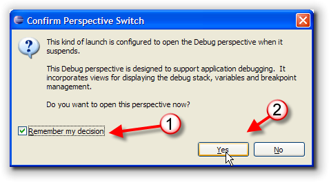
That's what we want. I'd go ahead and click the little checkbox I've marked #1, so you don't have to click OK each time you start debugging your program.The Debug Perspective
Once the debug perspective pops up, you should see something
that looks like this:
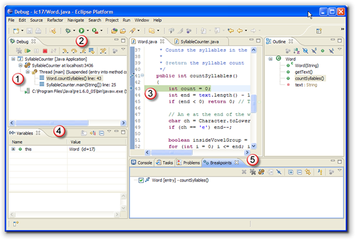
Let's look quickly at the relevant views, and then we'll customize it to optimize your debugging experience.- On the left at #1 is the Debug Pane which acts as a sort of global debugging control panel; it shows you which programs are active and suspend and what line is currently executing. As you can see, we're debugging the SyllableCounter program. The main method called countSyllables at line 25 and then the main thread was suspended at line 43 on the entry to countSyllables.
- On the top of the of the Debug Pane is a small toolbar (marked #2) containing buttons allowing you to step through your code, line by line. We'll be using these buttons shortly. The toolbar also contains icons that allow you to easily re-run the same tests. Using this button is often more convenient than using the main run button, since you don't have to switch back to the test class to use it.
- The Source Code Pane appears in the center of the
screen at #3. Notice the green line highlighting line 43,
along with the small arrow appearing in the left-hand
margin. This shows you which line of code is "in the
wings" waiting to be executed next. This line of code has
not yet run, however.
Why your program didn't stop on the heading line, where you actually put the breakpoint? Because a method header doesn't contain any executable statements. You can put a breakpoint on any line of code in your program, but the debugger will stop on the first line of executable code at or following the breakpoint.
-
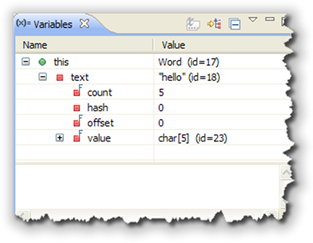
Since line 43 hasn't yet executed, the variable count is not yet created. In #4, the Variables Pane, we can see and examine each of the variables as they are created. The only thing in the window now is the variable namedthis, which refers to the current object. If you click the little plus sign to its left, you can see the instance variables contained in the current object, like this. - Finally, #5 shows the Breakpoints Pane, where you can see a list of all active breakpoints and activate and deactivate them without going through the source code window. This is really useful when debugging multi-file programs.
Configuring the Debug Perspective
OK. Let's simplify this perspective a little bit.
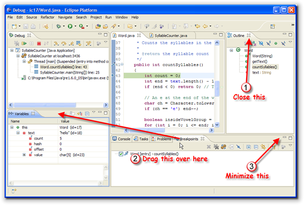
- Close the Outline window. It's really not necessary.
- Drag the Breakpoints tab over into the same pane as the Variables, and then
- minimize the pane appearing at the bottom of the screen in the center.
Finally, let's add an Expressions (or Watch)
View to the
Variables Pane as well, like this:
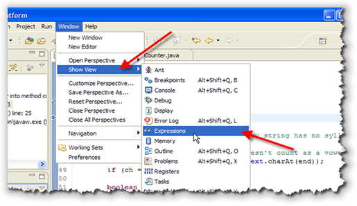
Here's what your finished Debug Perspective should look like: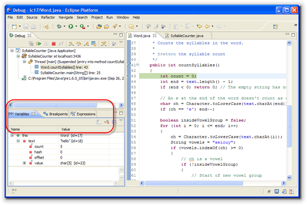
Step Over and Into
Now, let's look at the code. First, the countSyllables()
method needs to check the last character of the word
being examined, to see if it is a letter 'e'. Remember that
we're not going to count a trailing 'e'
as a syllable.
As you can see in the code here, the program
calculates the position of the last character (at text.length() –
1) and then uses the charAt() method to extract the character
and store it in the char variable named ch.
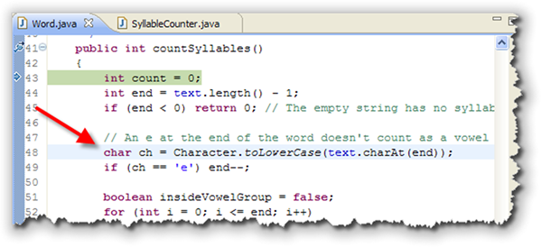
Let's go forward to that point and see ifch
actually contains the value that we expect. Since our the
first word we entered was "hello", the last character
should be the cahracter 'o'. Let's see
if that's true.
This is really the key to successful debugging; knowing what values your variables should contain at any given point, and then checking to see if the actual value is what you expect.
To run our program in "slow motion", we'll use the various "step" commands on the Debug Pane toolbar, shown below.
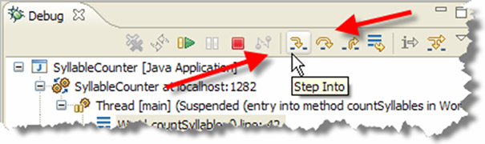
You'll probably want to memorize the keyboard shortcuts as well, because that can be much more efficient. Here's what the various commands do:- The Step Over command (the arrow on the right),
executes the "current" line of code, but if the line of code
contains a method call, it does not step "into" the
method, but simply calls the method (running at full speed)
and then returns to the next line in the current code.
In other words, after doing a "step over",
you'll find yourself in the same source
file, on the next line of executable code.
You should always use Step Over if a line of code contains a library function, like line 44 which calls the
The keyboard shortcut for Step Over is F6.String length()method. You don't want to start debugging the Java class libraries. - The Step Into steps into any method or function
being called, instead of running the method at full speed
before returning to step mode. That means that your cursor
will jump to the first line inside any method
called on the current line. If
there are multiple method calls on that line, then you'll
jump into them in the order that they are evaluated in the
expression.
Usually you'll only use Step Into to examine a) your own code, and b) only when you have already narrowed down the problem to a particular method.#
The keyboard shortcut for Step Into is F5. - The Run menu also has a handy Run to Line command that is useful if you don't want to step over several different lines. You place the cursor on the line you want to jump to in your source code. The keyboard shortcut for Run to Line is Control + R.
If you're following along, use these techniques to run to the line
following the line where ch is assigned a value. (That's line 49
in the screenshots here, but it might be different on your computer,
depending on the source formatting.) That's the line that starts
with if (ch == 'e').
Inspecting Variables
With the program stopped, you can now inspect the value
stored in the variable ch. Eclipse has several ways to do this.
- First, you can simply hover your cursor over the variable
in the source code. This is known as a quick watch:
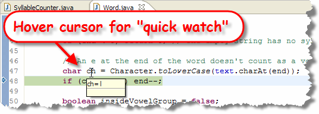
- Second, you can use the Variables Pane. The Variables Pane
displays the contents of all variables that are in scope.
To inspect the constents of instance variables in the
current class, you'll need to expand the
thisnode, like you saw earlier. Local variables will appear and disappear as they go in and out of scope:
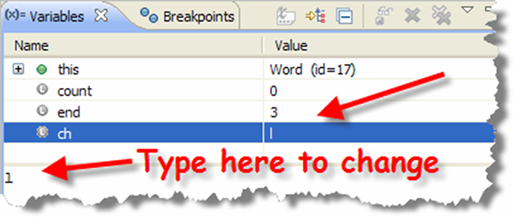
In the Variables Pane you can also change the value of a variable at any point and then continue debugging. This can be really handy because when you notice a mistake you don't have to stop your debugging session, make the change to your source code to fix the mistaken value, and then step through your code so you can pick up at the point you left off. Instead, you can just make the change, like this, and continue on as if the value were correct.
A word of warning, though. If you do make changes to variables using the Variables Pane, make sure you write yourself a note so that you remember to change the source code after your debugging session is over. If you don't, your program will still be incorrect, even if you got through the debugging session successfully.
Now, look at the value for ch. You can see that
ch contains the value 'l'. That is
strange. Look at the source code. The end
variable was set to text.length() - 1, which
is the last position in the text string, and
ch is the character at that position.
Unfortunately, we still don't know what caused it!
Watching Variables
Eclipse has one more way for you to examine variables: by creating a Watch expression in the Expressions Pane. This allows you to specify exactly which variables or expressions that you want to see, and not have to sort through all of the variables in and out of scope in the Variables Pane.
To create a Watch, switch to the Expressions Pane and
right-click. From the context menu, select Add Watch
Expression like this:
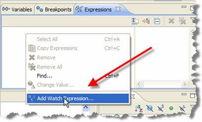
When the Add Watch Expression dialog appears, simply type in the variable you want to watch and click OK.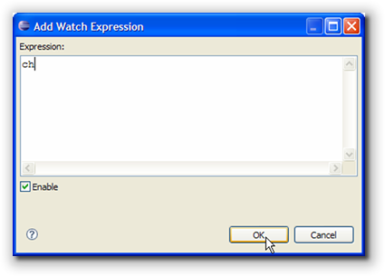
Do NOT press the enter key after typing in your variable name. That creates an expression consisting of your variable name along with a newline, which is not what you want.
Now, as your program runs, you'll be able to see (and
optionally change) the values of only the variables you are
really interested in. Since ch contains the
value 'l', when it should contain 'o',
let's look at the second variable in our code, end.
Go ahead and add these two watches:
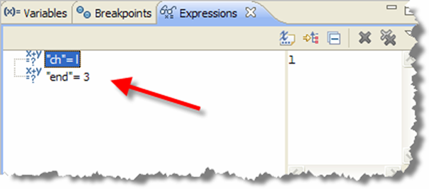
Restarting
OK. Now the problem is obvious. Since the end
contains 3, that means that instead of "hello"
we're really looking at the last character in the word
"hell". It looks like we've already gone
past the problem.
While you can step forward into your code, there are no buttons for "rewinding" or stepping backwards. Instead, you'll need to terminate the program, and then, set a second breakpoint earlier in your code. You may need to do this several times as you attempt to narrow down the section of code where the error first appears.
To terminate your current debugging session, click the little red "stop" square appearing in the screenshot here:
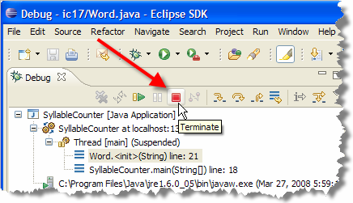
ThecountVowels() method processes the characters
contained in the instance variable named text.
What we need to find is where the text variable
is initialized.
That's not too hard because, as you know, you'll usually initialize your instance variables inside the class constructor. Go ahead and:
- put a breakpoint on the
Wordconstructor. - add watches for the variables
i,jandtext.
Once you've done that, single step
through the code (or run to line) so that you're on the line
where the text instance variable is assigned a
value. Then, start single step and watch each of the variables.
Tracking Down the Problem
To see the problem, look at the values in your
Watch window:
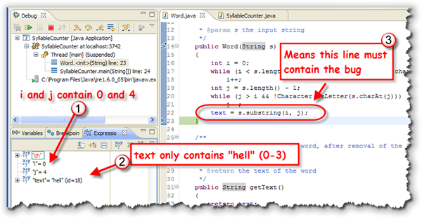
- As you can see,
iandjcontain0and4, which is what you'd expect for the word "hello". (Remember that the first character is 0, so the last index is going to be one less than the length.) It looks like both of them are OK. - When we look at the value for
text, though, you can see it only contains four, not five characters. - That means that we can definitely say that the
bug occurs on the line the assigns the value to the
instance variable named
text.
Since i and j are correct, apparently
we've made a mistake using the substring() method.
And, that seems to be the case. You remember that while the
first parameter in the substring() method is the
character we want to start with, the last parameter is not
the ending index, but the index that is "one past" the end.
That means that to correctly grab the characters i
through j, we need to use the expression
j + 1 as the second parameter when calling the
substring() method.
Try Again
OK, so we've fixed the problem. Everything should be just great, right?
Well, let's see.
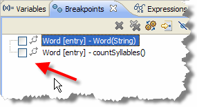
Switch over to the Breakpoints pane and disable both of the two breakpoints by "unchecking" the checkbox next to the name like this. Run the program by using the "Run" button and enter "hello yellow peach." once again.Do you get what you expect? Nope; still doesn't work right.
It looks like we have to investigate further.
Re-enable just the breakpoint for the countSyllable()
method and then start debugging again. This time, instead of
entering "hello yellow peach", just enter
"hello" followed by a period.
Since the problem seem to be with the variable count,
(which reports the number of syllables) create a watch
expression for count and another for ch
(if you deleted it previously).
Remember that we want to count a syllable whenever we get
a sequence of vowels. That means we should count a syllable
when we encounter the 'e' in hello, and a second one when
we encounter the 'o'.
Let's see if that happens by single-stepping through the
countSyllables() method.
Checking Vowels
Here's what you should see as you trace through the program.
- Notice that at the beginning of the loop which will process
the instance variable
text, thebooleanvariableinsideVowelGroupisfalseandcountis 0. That looks OK:
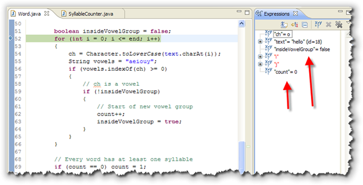
- Now, inside the body of the loop, the first
character is extracted (the
'h'from hello shown at #1 here) and a test is made at #2 to see if it's a vowel. It obviously isn't a vowel, so the entire body of theifstatement is skipped and execution jumps back to the next repetition of the for loop for the next character. This also seems correct:
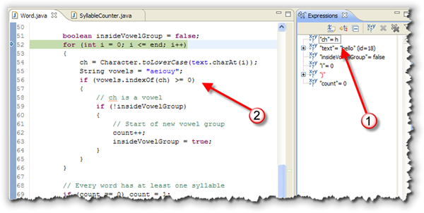
- The next time through the loop, the second
character is an
'e'(at #1). Since that is a vowel (at #2), we go up to the secondifstatement. SinceinsideVowelGroupis stillfalse(remember that it was set right before the loop began), we'll enter the nestedifstatement, increment the variablecount(counting the first syllable), and then setinsideVowelGroup trueso that any subsequent vowels in this group won't be counted as separate syllables:
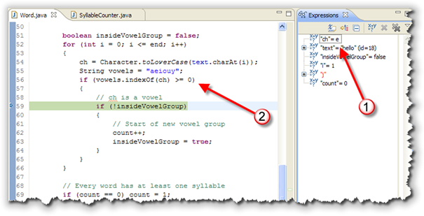
- Our second syllable should be counted when we come
to the
'o'at the end of the string. Stepping through the code to that point, we find that we enter the firstifstatement, correctly, but theinsideVowelGroupvariable is still true, indicating that the'o'is part of an existing group of vowels (even though the last character was the'l'immediately before the'o', which is definitely NOT a vowel.)
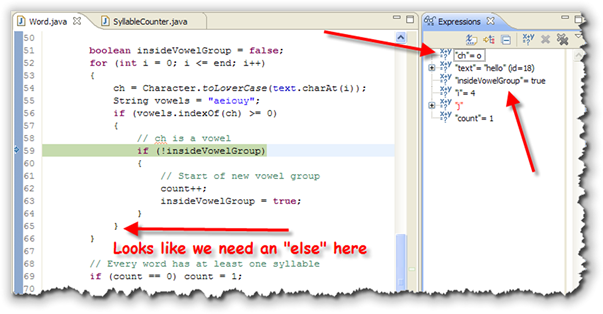
Looking carefully at the code, you can probably see the error now. When we encounter the first vowel in a group, we set theboolean flag insideVowelGroup.
We forgot, though to reset it to false, when we
left the vowel group. To do that, it looks like all we need is
an else statement here that sets
insideVowelGroup to false anytime
we read a character that is not a vowel.
Go ahead and make this fix. Then run your program again with "hello yellow peach." It should run correctly now.
The Debugging Process
Debugging your code is a process—a series of steps that help you find and fix the errors in your program. The process begins when you determine that your program is producing the wrong output (something you'll normally discover by testing.) The goal of the process is to fix the program, and this is best done in several disciplined steps; it's altogether too easy to fix one problem, and, in the process, introduce another.
To avoid that, you should perform each of the following steps in the debugging process, in order:
- break it,
- isolate it,
- fix it
- and test it
Break It
It might seems strange that the first step in fixing your program is to break it; after all, if your program wasn't already broken to begin with, you certainly wouldn't be debugging it now.
Well, that's not what breaking it means. Rather than introducing new errors, breaking it refers to your ability to force your program to fail reliably; that is, repeatedly and at will. If your program bugs appear sporadically and unexpectedly, then you don't really have a very good chance of catching them.
Breaking a program involves reproducing the conditions under which it fails. Ask yourself what numbers you entered, where did you click the mouse, what input was provided, what controls were clicked and in what order. Then, sit down and perform exactly the same actions making sure that you've isolated the circumstances where the error occurs.
Don't try to fix the program until you can break it at will.
Until that occurs, you don't really know what the problem is.
Isolate and Understand
The next step, to locate, isolate and understand the bug, is the most difficult of the four, so be patient and be prepared to take your time. To do this, you'll use the techniques of divide and conquer. Here's how.
- If you have no idea where in your code the error occurs,
place a breakpoint on the
main()method and start Stepping Over each of the methods that appear there. After you step over each method, examine the variables or output to see if the error you are trying to fix has occurred. - When the error occurs, locate the last method right before the error occurred. Then, Step Into that procedure and repeat the process; Stepping Over each line inside that procedure. In this way, you'll repeatedly narrow your search until you'll come to the single statement that causes the error.
Once you've located the bug, before you can fix it you'll have to understand exactly what caused the problem. To understand the bug, you have to have a firm grip on what your program should do. What that means is:
- Before you inspect a variable, how have to know the expected values. Just looking at the values won't help at all, if you don't know what the values should be.
- When the value is correct, don't be afraid to look elsewhere. Often this requires you to rethink what is causing the problem. If multiple variables are used in a calculation, for instance, make sure you look at all of them, not just the final "output" variable.
- Make sure you double-check your computations,
especially if they involve integers and floating point
number or library methods. If you are calling a method,
like the
substring()method in the example in this lesson, revisit the documentation to make sure you are doing it correctly. Just because you don't have a syntax error doesn't mean that you are using a method correctly.
Sometimes understanding the problem simply means putting things aside for a bit and then coming back to the problem later. This gives your subconscious mind a chance to chew on the problem a bit.
Fix and Test
Once you understand your program well enough to see why it's not working, you're ready to fix it. Think through the changes you need to make. Look at the big picture, especially when you are working with large numbers or performing a complex calculation. Is the answer you're getting generally reasonable?
Sometimes the change you need to make is simple and involve only a single line of code; other times you may realize that your whole concept was flawed and you'll need to redesign an entire method or even an entire class.
If you've ever watched television, you've probably seen the situation-comedy episode where the well-meaning father decides to fix the roof or the shower instead of calling in an expensive professional. This plot device has endured for so many years because it is so true to human nature; all of us tend to rush in blindly, "fixing" things but leaving the situation worse than when we began.
To avoid having to call in the "software plumber" to repair your fixes, it's always a good idea to make a backup of your code before performing radical surgery. For more modest changes, you might want to comment out the original line of code before adding your new changes, in the event that you discover your original code was correct after all.
At this point, 90% of the programmers will pack up their tools and head for home. A good craftsman always performs one more step: testing the repair to see if the new kitchen light actually can be turned on and off.
Testing and debugging are not the same thing. Debugging begins when you learn that your program contains an error. It is the process of isolating the bug and removing it. Testing, on the other hand, is aimed at determining exactly what bugs still remain in your program.
Testing turns into debugging when an error is found and debugging should always transition back to testing to make sure your fixes are good. In the testing-debugging process you will constantly bounce back and forth between these two until you're sufficiently confident that no serious bugs remain.
Coming Up ...
In this lesson, you learned how to use the Eclipse Debugger to pause your program while it was running, and to examine the state of your variables to locate and squash any remaining bugs. You also learned how to structure a debugging session by first breaking your program and then locating, understanding and then fixing its bugs.
In the last lesson this week, we'll leave testing and debugging behind and return to a topic you all love: arrays. This week you'll learn how to create and instantiate object arrays, and how to process arrays that contain both valid and invalid data.